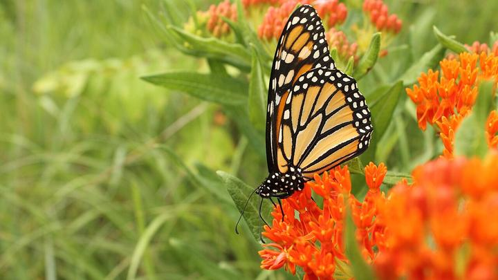
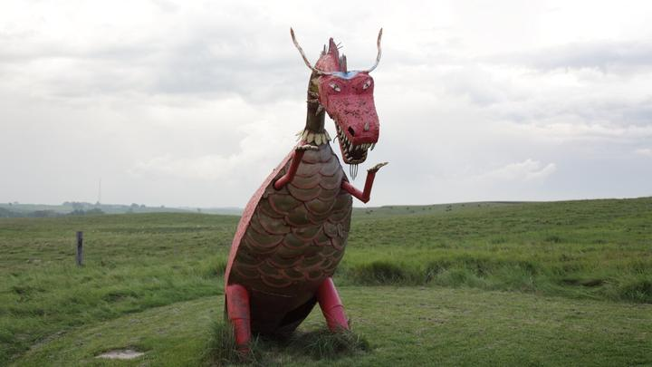
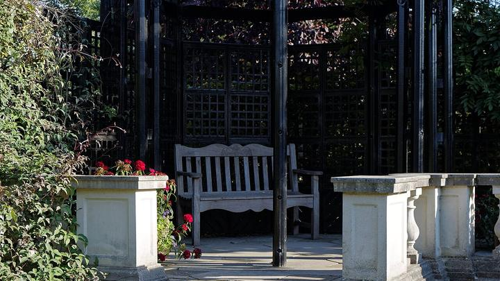
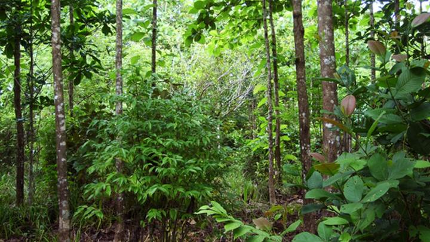
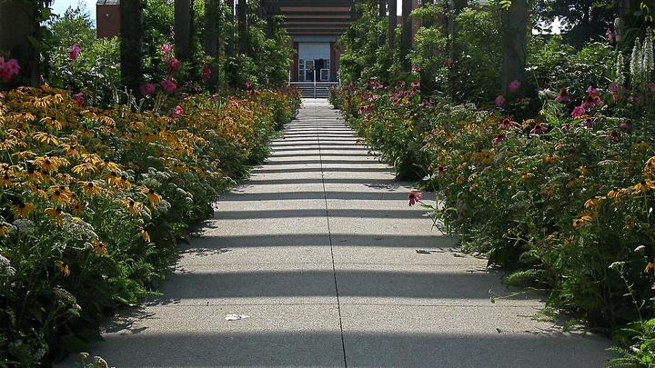
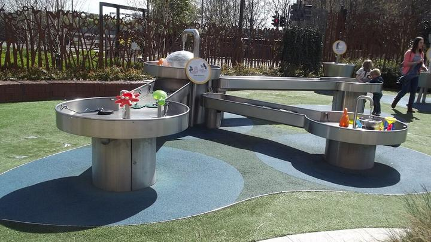

Butterfly & Bird Sanctuary
Active biodiversity habitats with native nectar flora, larval host plants, natural clay bird baths, feeding stations, and nature observation trails.
- Nectar flora
- Bird feeders
- Biodiversity trail
Municipal Corporation Ludhiana | Park Adoption Portal
Our Ludhiana · Our Responsibility
Municipal Corporation Ludhiana invites organizations and businesses of all scales — corporate CSR partners, MSMEs, local enterprises, industrial units, trade associations, registered trusts, and resident welfare associations — to adopt, green, and steward the city's parks and green belts. Browse 918 municipal green assets, study site dossiers, and submit an Expression of Interest online.
Source: MCL Horticulture Wing park register. Figures are computed live from the published dataset on this page.
Under the MCL Public Park Adoption Policy, greening and stewardship are open to corporates under mandatory CSR, as well as MSMEs, commercial establishments, trade bodies, trusts, and resident associations who want to adopt and transform public green spaces.
For corporates fulfilling Section 135 requirements under the Companies Act 2013 with formal municipal reporting.
For non-CSR businesses, proprietary units, LLPs, local factories, and commercial shops adopting neighborhood spaces.
For market committees, focal point industrial associations, and merchant chambers greening commercial belts.
For registered philanthropic trusts, resident welfare associations, and citizen groups co-developing parks.
Filter the register by zone, ward, type, area or adoption status. Open any site to read its full municipal asset dossier.
Submit your organisation/business details, adoption pathway, proposed theme, scope of intervention, indicative budget and preferred tenure.
The Horticulture Wing verifies the site, confirms the scope and shares the maintenance schedule and permitted branding norms.
A formal agreement is executed for the agreed tenure — one, three or five years — and handover of maintenance follows.
The complete Ludhiana municipal green asset register. Search by name or locality, filter by zone, ward and adoption status, switch seamlessly between cards, split list & map, full GIS geospatial map and data table, or submit an Expression of Interest.
Zone-coded municipal centroids recorded by MCL Horticulture Wing. Click any marker for instant park details, dossier access, and Expression of Interest.
| MCL ID | Site name | Type | Zone | Ward | Area | Authority | Status | Action |
|---|
MCL welcomes high-impact greening, sports, environmental, and civic concepts from business entities, MSMEs, corporates, and citizens. Priority models are highlighted below for inspiration, but proposals are not restricted to these—applicants are actively encouraged to propose any custom innovative theme.

Active biodiversity habitats with native nectar flora, larval host plants, natural clay bird baths, feeding stations, and nature observation trails.

Circular economy showcase with creative artistic sculptures made from scrap and e-waste, solar smart benches, and interactive recycling kiosks.

Tranquil shaded reading gazebos, weatherproof mini-book trees, quiet study seating alcoves, and solar LED reading lights.

High-density native tree plantation achieving up to thirty times faster growth, maximum carbon sequestration, and measurable microclimate cooling.

Dedicated sensory walking tracks, aromatic herbal medicinal beds, ergonomic resting benches, and gentle open-air physiotherapy stations.

Eco-friendly natural timber play equipment, interactive water and solar physics demonstrators, and botanical discovery gardens.
Fast-Track & Open Innovation. In addition to the notified models above, MCL actively invites innovative greening, environmental, recreational, and civic concepts. The list of themes is not restricted—select Other / Custom Theme Concept in the Expression of Interest form to specify and submit your own project theme.
A breakdown of Ludhiana's municipal green estate by zone, custodianship and daily public use, to help you target greening and sponsorship spend where it reaches most people.
Submit an Expression of Interest for a specific site, or submit a city-wide proposal covering multiple wards and green corridors — open to corporates, MSMEs, traders, and organizations.
Municipal asset ID: MCL_000
Figures are taken from the MCL Horticulture Wing park inventory. Survey area is the recorded plot extent; coordinates are indicative centroids for identification only. Detailed site characteristics and boundary verification are confirmed at joint site inspection.
Street View preview unavailable for this location.
Your proposal has been registered with Municipal Corporation Ludhiana's Estate & Horticulture Wing.